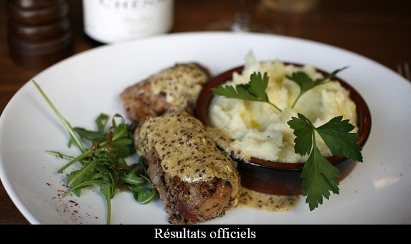

Lauréats de l'année 2017
Liste officielle des mâchons diplômés le 4 avril 2018:
Thierry Fleury - Le Select Monceau
95 rue de Miromesnil, 75008 PARIS
Laetitia Gladines – Le Passage
46 rue des Fossés Saint-Bernard, 75005 PARIS
Clarisse et Jean Sudaka - Les Petits Insolents
2 Place Léon Deubel, 75016 PARIS
Alain et Didier Miquel – Le Mistral
401 rue des Pyrénnées, 75020 PARIS
David Pernin - Le Réveil du Xe
35 rue Bouchardon, 75010 PARIS
Thierry Breton – La Pointe du Grouin
8 rue de Belzunce, 75010 PARIS